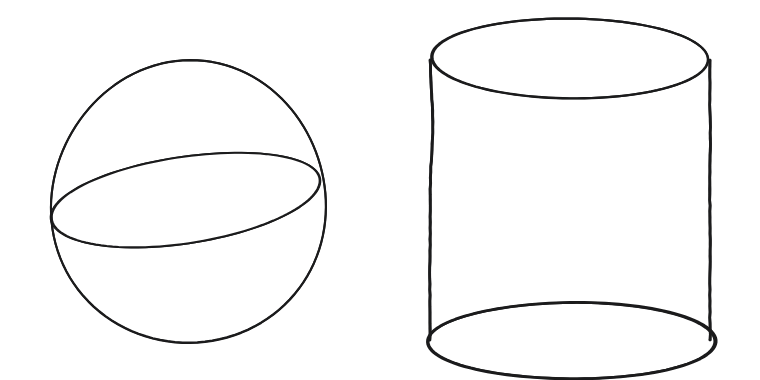
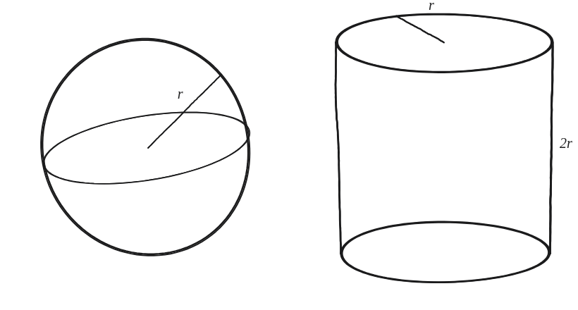

Demostra que l'àrea de la superfície d'una esfera és exactament dos terços de la del seu cilindre (tancat).

Què hem de produir
"El seu cilindre" vol dir: el cilindre que envolta l'esfera exactament —mateix radi, alçada igual al diàmetre— tancat amb les seves dues tapes circulars, no obert.
Calcula les dues superfícies per separat
Superfície de l'esfera: 4πr². Superfície del cilindre tancat: la part lateral (2πr, el perímetre, per 2r, l'alçada) més les dues tapes circulars (πr² cadascuna).
La construcció

Tancar-ho
Sumant les tres peces del cilindre —lateral més dues tapes— en un sol terme: 2πr(2r) + 2(πr²) = 4πr² + 2πr² = 6πr². Comparant-lo directament amb 4πr² (l'esfera): la raó és 4πr²/6πr² = 2/3.
La superfície d'una esfera és exactament dos terços de la del cilindre tancat que la circumscriu ajustada —el resultat clàssic d'Arquimedes.
Comprovació
Amb r=1: esfera = 4π ≈ 12,57. Cilindre: lateral = 4π, tapes = 2π, total = 6π ≈ 18,85. Raó: 4π/6π = 2/3 exacte.
Aquest 2/3 i la fracció π/6 de la Qüestió 59 són dues comparacions diferents, amb sòlids continents diferents (allà un cub, aquí un cilindre), i entre els dos números no hi ha cap relació aritmètica: només comparteixen la idea que l'esfera ocupa menys que el sòlid recte que la conté. El que sí que val la pena mirar és la raó de volums entre aquesta mateixa esfera i aquest mateix cilindre: l'esfera fa (4/3)πr³ i el cilindre πr²·2r = 2πr³, o sigui 2/3 una altra vegada. Que la mateixa fracció governi alhora les superfícies i els volums és el resultat que Arquimedes va demanar que li gravessin a la tomba.